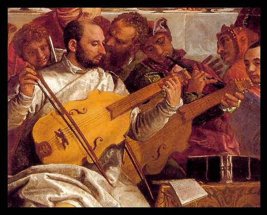
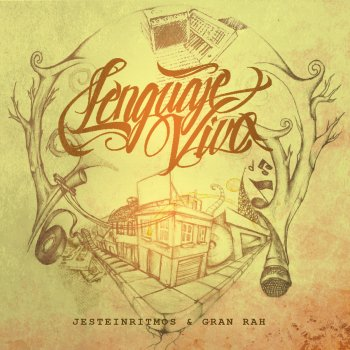

Composición I
Clase 004

Viola da Gamba
Viola d'amore

"O Fortuna", Carmina Burana
Carl Orff
“La oración de la mañana” (El album de la niñez)
Piotr Tchaikovsky
Terrestrials
Sunn O)))
Disco Secreto:
Gran Rah - Álbum Completo! - Lenguaje Vivo 2012

Postdata Data
Llegar a la hora